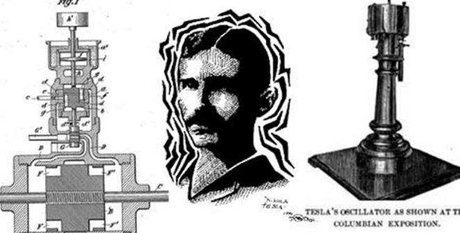

Nikola Tesla dilahirkan sebagai etnis Serbia di desa di Smiljan, Lika, Kekaisaran Austria (sekarang Kroasia) pada tanggal 10 Juli 1856.
Ayahnya, Milutin Tesla adalah Pendeta Ortodoks. Ibu Tesla memiliki bakat untuk membuat alat kerajinan rumah, peralatan mekanik, dan kemampuan untuk menghafal puisi epik Serbia.
Nikola (nama panggilan sewaktu kecil) memiliki bakat memori eidetik dan kemampuan kreatif dari genetika dan pengaruh ibunya.
Tesla adalah anak keempat dari lima bersaudara. Dia memiliki kakak bernama Dane dan tiga saudara perempuan, Milka, Angelina dan Marica. Dane tewas dalam kecelakaan berkuda ketika Nikola Tesla berumur lima tahun.
Pada tahun 1861, Tesla mengenyam pendidikan di sekolah dasar di Smiljan di mana ia belajar bahasa Jerman, aritmetika, dan agama.
Pada tahun 1862, keluarga Tesla pindah ke Gospic, Lika, di mana ayah Tesla bekerja sebagai seorang pendeta. Nikola menyelesaikan sekolah dasar, kemudian sekolah menengah.
Pada tahun 1870, Tesla pindah ke Karlovac di bagian utara untuk menempuh sekolah menengah atas di Gymnasium Karlovac. Kelasnya menggunakan bahasa Jerman sebagai pengantar karena sekolahnya ini berada di dalam Militärgrenze Austria-Hungaria.
Tesla kemudian menulis bahwa ia tertarik dengan demonstrasi kelistrikan oleh profesor fisikanya.[26] Tesla mencatat bahwa demonstrasi "fenomena misterius" ini membuatnya ingin tahu lebih lanjut mengenai gaya ini.
Tesla mampu menghitung kalkulus integral dalam kepalanya, sehingga gurunya mengira bahwa ia mencontek. Ia menyelesaikan masa sekolah dalam tempo tiga tahun, lulus pada tahun 1873.
Pada tahun 1875, Tesla terdaftar di Politeknik Austria di Graz, Austria, melalui beasiswa Militer Frontier.
Pada bulan Desember 1878, Tesla meninggalkan Graz dan memutuskan semua hubungan dengan keluarganya untuk menyembunyikan fakta bahwa ia keluar dari sekolah.
Awal Karier
Pada tahun 1881, Tesla pindah ke Budapest untuk bekerja di bawah Ferenc Puskas pada perusahaan telegraf, Budapest Telephone Exchange. Setelah tiba, Tesla menyadari bahwa perusahaan dalam masa pembangunan,
menurut dia tidak fungsional, sehingga ia bekerja sebagai juru Telegraph di Kantor Pusat sebagai gantinya. Dalam beberapa bulan, Budapest Telephone Exchange menjadi fungsional dan Tesla dialokasikan ke posisi listrik utama.
Selama masa kerjanya, Tesla membuat banyak perbaikan peralatan Central Station dan mengaku telah disempurnakan telepon repeater atau penguat, yang tidak pernah dipatenkan atau dijelaskan ke publik.
Bekerja Untuk Edison
Pada tahun 1882, Tesla mulai bekerja untuk [Kontinental Edison] Perusahaan di Prancis, merancang dan membuat perbaikan untuk peralatan listrik. Pada bulan Juni 1884, ia pindah ke New York City, di mana ia disewa oleh Thomas Edison
bekerja untuk nya di Edison Machine Works. Karya Tesla untuk Edison mulai dengan teknik elektro yang sederhana dan cepat berkembang untuk memecahkan masalah yang lebih sulit.
Tesla ditawari tugas sepenuhnya mendesain ulang generator arus searah pada Perusahaan Edison. Pada tahun 1885, ia mengatakan bahwa ia bisa mendesain ulang Edison yang tidak efisien motorik dan generator, membuat perbaikan dalam layanan dan ekonomi.
Setelah Meninggalkan Edison
Setelah meninggalkan perusahaan Edison, Tesla bermitra dengan dua pengusaha pada tahun 1886, Robert Lane dan Benjamin Vale, yang setuju untuk membiayai perusahaan penerangan listrik dengan nama Tesla, Tesla Electric Light & Manufacturing.
Perusahaan ini dipasang listrik lampu busur sistem pencahayaan berbasis dirancang oleh Tesla dan juga memiliki desain untuk dinamo komutator mesin listrik, paten pertama yang dikeluarkan untuk Tesla di Amerika Serikat.
Pada akhir 1886 Tesla bertemu Alfred S. Brown, seorang pengawas Western Union, dan pengacara dari New York Charles F. Peck. Kedua orang itu berpengalaman dalam mendirikan perusahaan dan mempromosikan penemuan dan paten untuk keuntungan finansial.
Berdasarkan paten Tesla dan ide-ide lain mereka sepakat untuk kembali padanya secara finansial dan menangani paten nya. Bersama di April 1887 mereka membentuk Tesla Electric Company dengan perjanjian yang menguntungkan dari paten yang dihasilkan
akan masuk ke 1/3 Tesla, 1/3 untuk Peck dan Brown, dan 1/3 untuk membiayai pembangunan.
Prestasi

Paten Tesla dan kerja teorinya merupakan dasar dari daya listrik arus bolak-balik (bahasa Inggris: Alternating Current, AC) modern termasuk distribusi daya polyphase, dan motor AC, yang ia umumkan pada Revolusi Industri Kedua.
Setelah pendemonstrasian komunikasi tanpa kabel pada 1893 dan memenangkan "Perang Arus", Tesla dianggap sebagai salah satu teknisi listrik AS terhebat. Tesla memiliki pengalaman di telepon dan teknik elektro sebelum berimigrasi
ke Amerika Serikat pada tahun 1884 untuk bekerja dengan Thomas A. Edison di New York City.
Tesla terkenal karena prestasi dan kecakapan memainkan pertunjukan, akhirnya sebagian masyarakat Amerika menyebutnya sebagai " ilmuwan gila . " Dari hak paten membuatnya mendapatkan sejumlah uang yang banyak,
banyak yang digunakan untuk membiayai proyek-proyek sendiri dengan berbagai tingkat keberhasilan. Sebagian besar masa pensiunnya dihabiskan dalam serangkaian di hotel New York. Dia meninggal pada 7 Januari 1943.